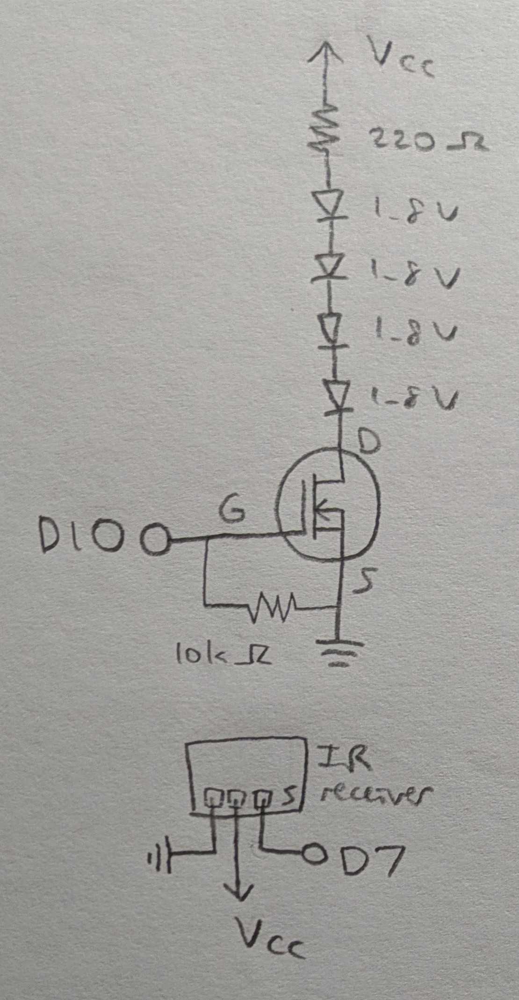
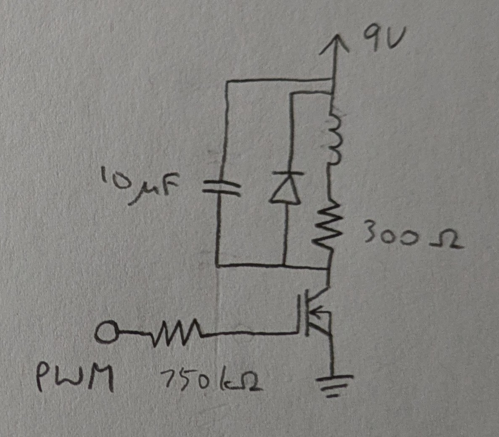

Requirements
- N-MOSFET transistor
- input sensor that uses a library: e.g. remote control, capacitive sensing, humidity sensor
- high-load output device
- external power supply
- analogWrite()
Schematic
The IR receiver is controlled with an IR remote.
Vcc is connected to a 9V DC adapter from main wall power.
Calculations
The 4 LEDs draw 4*1.8=7.2V of voltage out of 9V, with 1.8V drop remaining.
With a 220 Ohm resistor, the current is I=V/R=1.8/220=8.18 mA, which is well below the max continuous drain current for the transistor of 37.2 A at 25 deg C.
Circuit

Firmware
link to code file
/*
Transistors
with help from
https://www.circuitbasics.com/arduino-ir-remote-receiver-tutorial/
The load on the transistor is gradually activated or deavtivated
whenever the power button on the IR remote is pressed.
The transistor is connected to pin 10.
The IR receiver is connected to pin 7.
2025 November 10
Heidi Wang
*/
// IRremote version 2.6.0
#include
// IR receiver pin
const int RECV_PIN = 7;
// initialize receiver object
IRrecv irrecv(RECV_PIN);
// initialize results object
decode_results results;
// transistor load pin
const int loadPin = 10;
// the current state of the load pin
int loadState = LOW;
// setup function
void setup() {
// begin serial comm
Serial.begin(9600);
// enable receiver
irrecv.enableIRIn();
// blinks receiver LED when receiving signal
irrecv.blink13(true);
// sets load pin as OUTPUT with auto initial value of 0
pinMode(loadPin, OUTPUT);
// turn off load for initial state
digitalWrite(loadPin, LOW);
}
// loop function
void loop() {
// on receiving input
if (irrecv.decode(&results)) {
// print the IR code received
Serial.println(results.value, HEX);
//if keypad power button is pressed
if (results.value == 0xFFA25D) {
// toggle the load state
loadState = !loadState;
// if the new load state is HIGH, then gradually activate the load
if (loadState == HIGH) {
// fade in from min to max in increments of 5 points:
for (int fadeValue = 0; fadeValue <= 255; fadeValue += 5) {
// sets the value for the load (range from 0 to 255):
analogWrite(loadPin, fadeValue);
// wait for 30 milliseconds to see the fading effect
delay(30);
}
}
// else the new load state is LOW, then gradually deactivate the load
else {
// fade out from max to min in increments of 5 points:
for (int fadeValue = 255; fadeValue >= 0; fadeValue -= 5) {
// sets the value for the load (range from 0 to 255):
analogWrite(loadPin, fadeValue);
// wait for 30 milliseconds to see the fading effect
delay(30);
}
}
}
// reset the receiver to receive the next code
irrecv.resume();
}
}
Operation
Questions
-
From the datasheet for the N-MOSFET transistor https://www.diodes.com/assets/Datasheets/DMT6009LCT.pdf, The max current between pins 2 and 3, i.e. Drain and Source, is 37.2 A at 25 deg C.
-
Circuit with Arduino, DC motor, flyback diode, and capacitor:
components:
- N-MOSFET transistor https://www.diodes.com/assets/Datasheets/DMT6009LCT.pdf
- DC motor https://medialibrary.dana-industrial.com/wp-content/uploads/Technical-catalogue-Direct-current-motors.pdf
- flyback diode https://octopart.com/datasheet/p6ke200arlg-littelfuse-80727603
- capacitor https://octopart.com/datasheet/eeu-fc1h101-panasonic-39478547
- resistor https://octopart.com/datasheet/cfr100j100r-te+connectivity-16077129
- Arduino UNO R3 https://docs.arduino.cc/resources/datasheets/A000066-datasheet.pdf
-
The datasheet for the L293D chip: https://www.ti.com/product/L293DLinks

To move motor:
- A and B both forward,
- A and B both back,
- A forward and B back,
- and A back then A forward:
// Motor A pins int enA = 11; int in1 = 12; int in2 = 13; // Motor B pins int enB = 6; int in3 = 7; int in4 = 8; void setup() { // Set all motor pins as OUTPUTs pinMode(enA, OUTPUT); pinMode(enB, OUTPUT); pinMode(in1, OUTPUT); pinMode(in2, OUTPUT); pinMode(in3, OUTPUT); pinMode(in4, OUTPUT); // Set initial state to LOW digitalWrite(in1, LOW); digitalWrite(in2, LOW); digitalWrite(in3, LOW); digitalWrite(in4, LOW); } void loop() { // Set motors to HIGH speed digitalWrite(enA, HIGH); digitalWrite(enB, HIGH); // A and B both forward digitalWrite(in1, HIGH); digitalWrite(in2, LOW); digitalWrite(in3, HIGH); digitalWrite(in4, LOW); delay(2000); // A and B both back digitalWrite(in1, LOW); digitalWrite(in2, HIGH); digitalWrite(in3, LOW); digitalWrite(in4, HIGH); delay(2000); // A forward and B back digitalWrite(in1, HIGH); digitalWrite(in2, LOW); digitalWrite(in3, LOW); digitalWrite(in4, HIGH); delay(2000); // A back then A forward digitalWrite(in1, LOW); digitalWrite(in2, HIGH); delay(500); digitalWrite(in1, HIGH); digitalWrite(in2, LOW); delay(2000); // Turn off motors digitalWrite(in1, LOW); digitalWrite(in2, LOW); digitalWrite(in3, LOW); digitalWrite(in4, LOW); delay(2000); } -
No AI use.